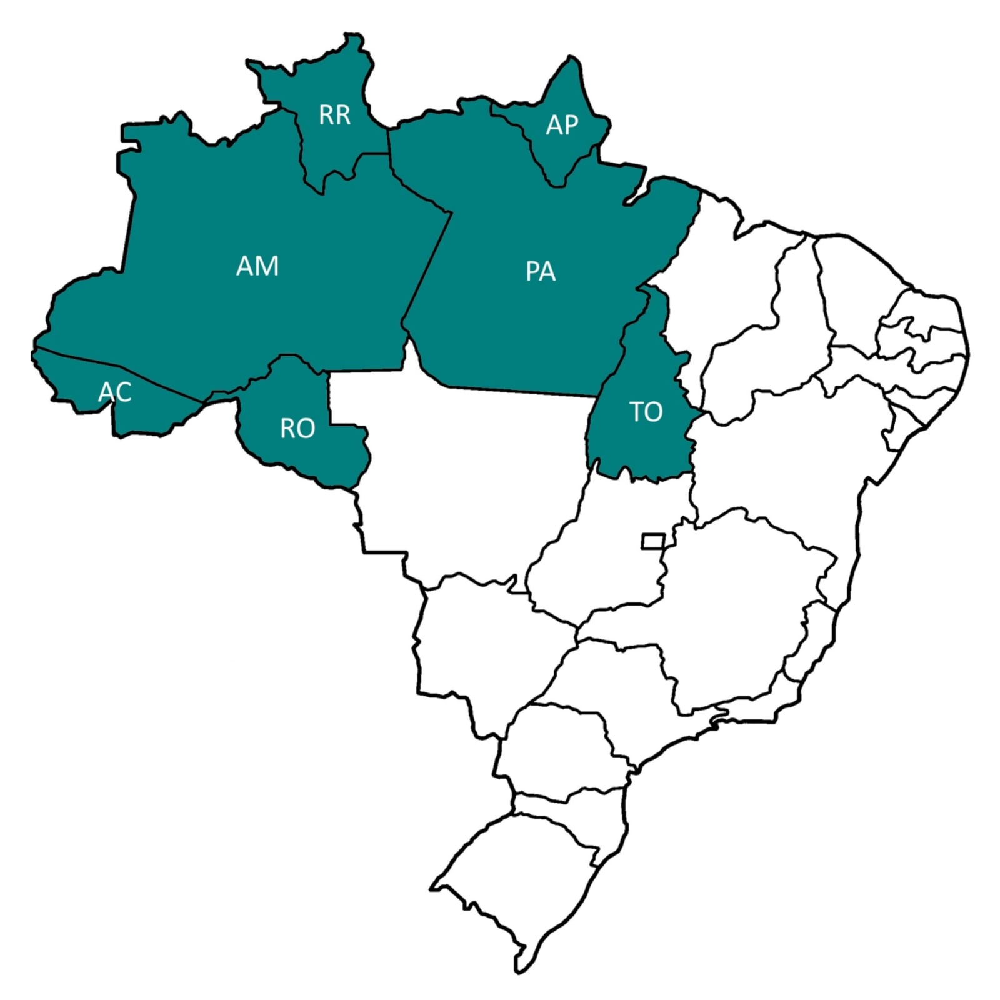

Morda a Borda
Não há limites para uma alimentação saudável.
Início •
Regiões
(Norte •
Nordeste •
Centro-Oeste •
Sul •
Sudeste) •
Sobre Nós •
Referências
Região Norte

Formada pelos estados do Amazonas, Acre, Amapá, Pará, Rondônia, Roraima e Tocantins,
a região
Norte do Brasil é a maior em extensão e corresponde a 42% de todo o
território
nacional. Com 15 milhões de habitantes, essa região é uma das mais
miscigenadas no país.
Em decorrência dessa miscigenação forte, a cultura se torna um elemento
característico da região,
com a maioria dos aspectos culturais advindos da
cultura indígena. Como a maior parte
da população indígena vive no Norte,
muito da cultura nortista é composta por características dessa comunidade.
Tendo grande parte do seu cardápio advindo de frutas e
temperos próprios da região, muitos pratos saborosos
são
oferecidos para quem deseja visitar esses estados.
Mandioca, peixe e ervas típicas são elementos quase obrigatórios na execução
dos pratos.
A mandioca é rica em fibras, isenta de glúten e possui dois tipos
de carboidrato: a amilopectina e a amilose.
Já o peixe é rico em nutrientes como
ferro, zinco, cálcio, magnésio, selênio, fósforo, cobre e vitaminas
B e C.
Um deles é o tacacá, um caldo feito com goma de mandioca, jambu (erva nativa),
tucupi
(pimenta artesanal feita de mandioca cozida), pimenta e camarão seco.
É uma iguaria
bastante consumida em Manaus, e em Belém também é muito famosa.
Receita de Tacacá
Ingredientes
2 litros de tucupí
4 dentes de alho
1 colher (chá) de sal
4 pimentas de cheiro
2 maços de jambu
1/2 kg de camarão salgado (seco)
1/2 xícara (chá) de goma de mandioca
Pimenta de cheiro
Modo de Preparo
Coloque em uma panela o tucupí, tempere com alho, sal e pimenta.
Leve ao fogo e deixe levantar a fervura.
A seguir baixe o fogo, tampe a panela e deixe cozinhar por 30 minutos.
Cozinhe o jambu em água quente, deixe cozinhar até os talos ficarem macios, retire e escorra.
Reserve.
Retire a cabeça do camarão e deixe de molho em uma vasilha com água para retirar o sal.
Ferva 4 xicaras (chá) de água com sal a gosto, dissolva a goma em uma vasilha com água fria.
Acresente ao poucos na água fervendo, até ficar um mingau grosso, ou, ao ponto de sua preferência.
Sirva em uma cuia nesta sequência: duas colher de sopa de tucupí,
uma concha de goma, uma concha de tucupí, algumas folhas de jambú
e 5 camarões, sal e pimenta a gosto.
Na falta da goma de mandioca pode ser usada o povilho azedo.
Dica
Tucupi é um molho de cor amarela extraído da raiz da
mandioca brava,
que é descascada, ralada e espremida (tradicionalmente usando-se um tipiti).
Depois de extraído, o molho “descansa” para que o amido (goma) se separe do líqüido (tucupi).
Inicialmente venenoso devido à presença do ácido cianídrico,
o líqüido é cozido
(processo que elimina o veneno), por horas, podendo, então, ser usado como molho na culinária.
© Airton Mesquita, Técnico em Nutrição e Dietética, 2023; IV FCAC
(Feira de Ciências, Arte e Cultura); EEEP Leonel de Moura Brizola.